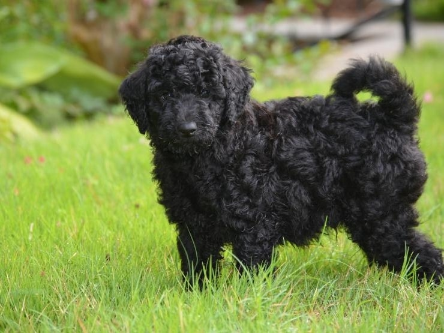

Destiny's Life
I used to live with my dog Jax. My family got Jax from a shelter four years ago. Here is a picture that is similar to how my double-goldendoodle looks.

We adopted Jax from a shelter as shelter dogs can sometimes be the best boys and gorls you can find.
- Shelter dogs deserve love.
- Jax was a scared puppy, but quickly became very playful when he realized he was safe.
- Shelters are normally overcrowded and the animals need families to show them kindness.
- I think buying from the shelter was one of the best things to happen to our family.
Visit the local Deceatur and Macon County Animal Shelter.